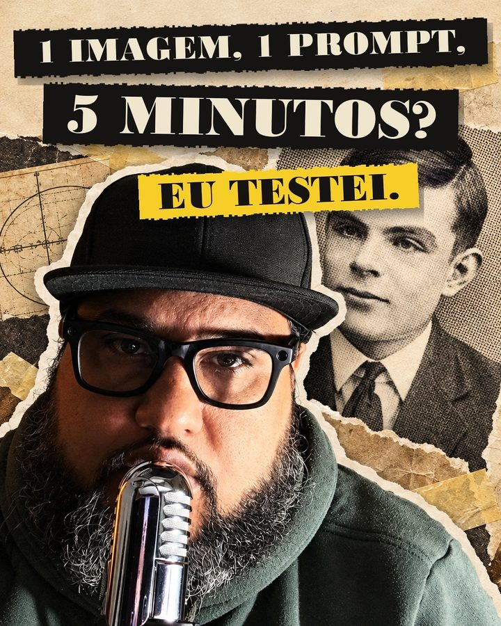
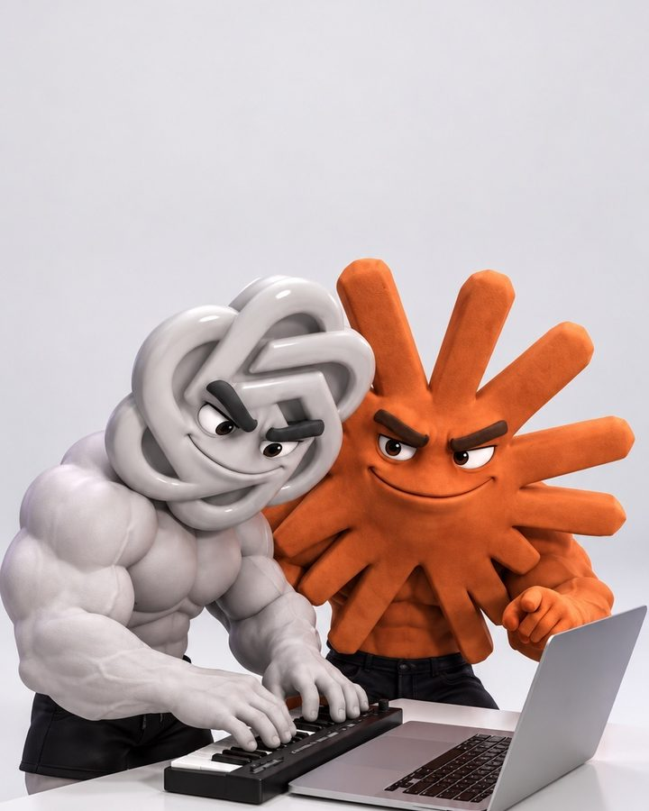
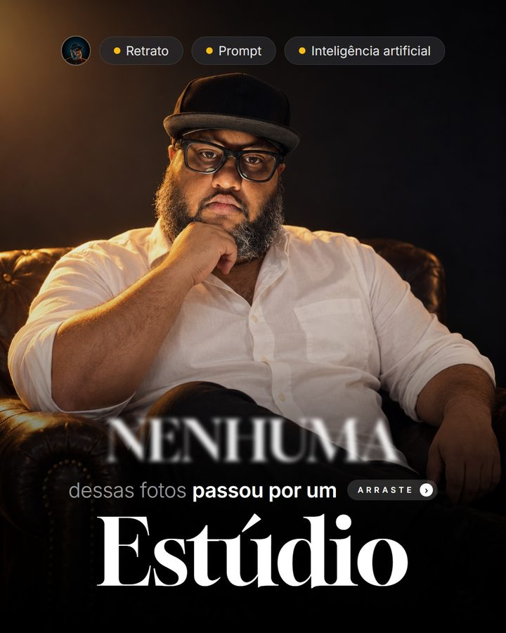
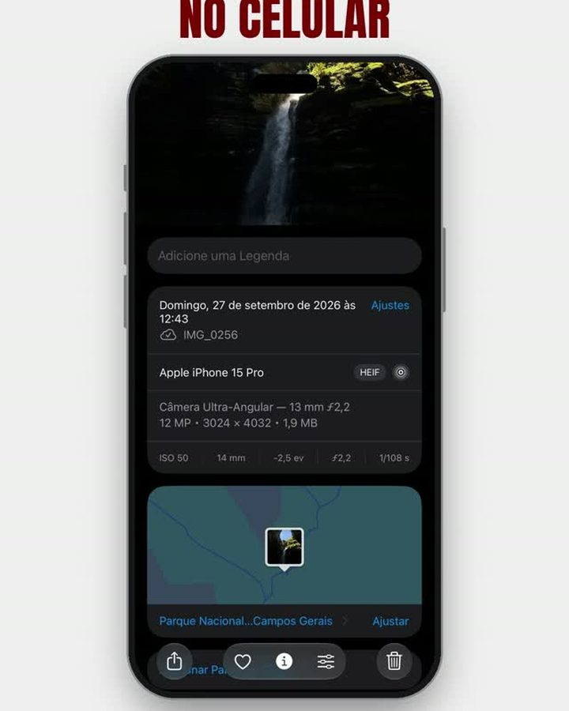

Guilherme Silva
@euguidasilva
Guilherme Silva
@euguidasilva
Eu testei
e conto se deu certo
Testo inteligência artificial em conteúdo de verdade. Aqui ficam os materiais de cada teste: o prompt, o roteiro e o projeto aberto, do jeito que eu usei.
O que saiu de cada teste
O roteiro base é aberto. Os outros chegam na sua DM: comenta a palavra no Reel e o robô manda o link.
Roteiro base
As 3 perguntas que eu respondo antes de abrir qualquer ferramenta, pro vídeo feito com inteligência artificial não sair igual ao de todo mundo.
baixar o PDF ↗
DM · VOXAnimação estilo Vox
1 imagem, 1 prompt, 5 minutos? Testei a promessa. O prompt e o projeto inteiro do After, montado por script, estão no GitHub.
comenta VOX no Reel ↗
DM · IMAGEMGerar imagem
O Claude Code não gera imagem. O Codex gera. A skill que faz um pedir pro outro e salvar o arquivo na pasta certa.
comenta IMAGEM no Reel ↗As 3 skills que eu mais uso
Contei no meu histórico do Claude. Nenhuma escreve por mim: duas revisam, uma pesquisa. Link e passo a passo pra instalar.
comenta SKILL no post ↗
DM · MANDA5 retratos de estúdio
Nenhuma das 5 fotos passou por um estúdio. Saíram de selfies de celular com estes prompts, prontos pra copiar.
comenta MANDA no post ↗
DM · VIDEOAntes e depois
Uma foto editada no celular virou Reel de antes e depois montado pelo Claude Code. O passo a passo e o projeto estão no GitHub.
comenta VIDEO no Reel ↗Três passos e o link chega
Cada Reel tem uma palavra. É assim que o material certo chega pra pessoa certa, sem formulário e sem e-mail.
Comenta a palavra
No Reel ou no post do teste. Só a palavra, do jeito que está no card acima.
Abre a DM
Em segundos chega uma mensagem minha com um botão. Toca nele.
Segue e recebe
O link só sai pra quem segue o perfil. É o combinado: o material é de graça, e o próximo teste você vê primeiro.
Testo inteligência artificial em conteúdo de verdade e conto se deu certo.
acompanhar no Instagram ↗